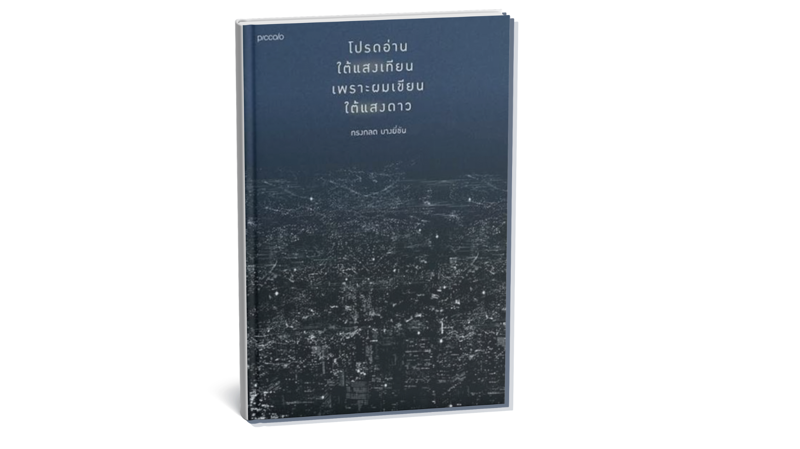

หนังสือที่ชวนให้เรากลับมามองชีวิตอีกครั้ง
เราไม่ได้ต้องการคำตอบสำหรับชีวิต
เราแค่ต้องการใครสักคนที่เล่าเรื่องธรรมดา ๆ ให้ฟัง
แล้วทำให้เรารู้ว่า…
“อ้าว ที่ผ่านมา เราก็มีความสุขกับเรื่องเล็ก ๆ ตั้งเยอะเลยนี่นา”
หนังสือเล่มหนึ่งที่เขียนขึ้นใต้แสงดาวบางที
อาจกำลังรอให้คุณเปิดอ่านมันใต้แสงของคืนธรรมดา ๆ สักคืน
หนังสือสำหรับคืนที่หัวใจต้องการใครสักคนมานั่งคุยด้วย ไม่ใช่หนังสือที่จะบอกคุณว่า “ชีวิตต้องเดินไปทางไหน”
แต่เป็นหนังสือที่จะชวนให้หยุดเดินสักครู่ มองไปรอบ ๆ ตัว
แล้วลองนึกถึงผู้คน สถานที่ ความทรงจำ และเรื่องเล็ก ๆ ที่เคยผ่านเข้ามาในชีวิต
บางเรื่องอาจทำให้ยิ้ม บางเรื่องอาจทำให้คิดถึงใครบางคน และบางเรื่องอาจทำให้คุณค้นพบว่า
สิ่งธรรมดาที่เราเคยมองข้าม อาจมีความหมายมากกว่าที่คิด
เพราะบางครั้ง การอ่านหนังสือที่ดี
ไม่จำเป็นต้องเปลี่ยนชีวิตเราในทันที
แค่ทำให้เรา มองชีวิตเดิม ๆ ด้วยสายตาที่เปลี่ยนไป ก็เพียงพอแล้ว
เราใช้ชีวิตแต่ละวันด้วยความเร่งรีบ
ตื่น ไปเรียน ไปทำงาน พบผู้คน กลับบ้าน แล้วเริ่มต้นวันใหม่
จนบางครั้งเราลืมสังเกตว่า
ระหว่างทางนั้นมีเรื่อง เล็ก ๆ เกิดขึ้นมากมาย
รอยยิ้มของคนแปลกหน้า
บทสนทนาสั้น ๆ
เพลงที่บังเอิญได้ยิน
สถานที่ที่เคยไปกับใครบางคน
หรือแม้แต่คืนหนึ่งที่เรานั่งมองท้องฟ้าเพียงลำพัง
หนังสือเล่มนี้ชวนเรา หยุดและมองสิ่งเหล่านั้นอีกครั้ง
อาจไม่ใช่หนังสือที่เราต้องอ่านเพื่อค้นหาคำตอบของชีวิต
แต่มันเป็นหนังสือที่ชวนให้เรา ตั้งคำถามกับชีวิตอย่างอ่อนโยน
เราเคยมีความสุขกับอะไร? เราเคยรักใคร?
มีใครบ้างที่เรายังคิดถึง? มีช่วงเวลาไหนที่เราอยากย้อนกลับไปอีกครั้ง?
และระหว่างที่กำลังวิ่งตามอนาคต เรากำลังมองข้ามความสุขอะไรไปหรือเปล่า?
คุณค่าของหนังสือจึงไม่ได้อยู่เพียงในเรื่องราวที่ถูกเขียนไว้
แต่อยู่ในสิ่งที่เกิดขึ้น หลังจากเราอ่านจบ
เมื่อเราปิดหนังสือ เราอาจมองท้องฟ้าเดิมด้วยความรู้สึกที่ไม่เหมือนเดิม
อาจนึกถึงใครบางคน อาจอยากโทรหาใครสักคน
อาจอยากกลับไปยังสถานที่บางแห่ง
หรืออาจเพียงอยากนั่งเงียบ ๆ และขอบคุณชีวิตสำหรับเรื่องเล็ก ๆ ที่เกิดขึ้นในวันนี้
เพราะบางครั้ง หนังสือที่ดีไม่ได้เปลี่ยนชีวิตเรา
มันเพียงทำให้เราเห็นคุณค่าของชีวิตที่เรามีอยู่แล้ว